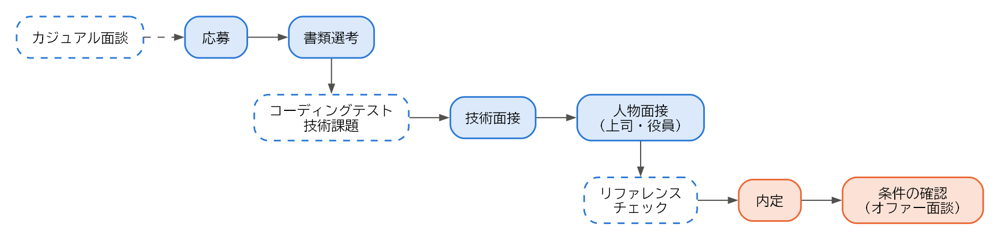

6. 選考
この章では、応募してから内定を得るまでの選考の流れと、エンジニアに特有の選考であるコーディングテストや技術面接への準備、選考の期間中に注意すべきことを説明する。
6.1. 選考の流れ
エンジニアの選考は、図 6.1 のような流れで進むことが多い。


図 6.1 選考の流れの例
点線の箱は、会社によって行う場合と行わない場合がある段階である。面接の回数は 2〜3 回が多いが、会社によって異なる。応募から内定までの期間は、1 か月程度が一つの目安である。
6.2. カジュアル面談
カジュアル面談は、選考に進む前に、会社と応募を考えている人が互いを知るために話す場である。ダイレクトリクルーティングのスカウトや、技術ブログからの問い合わせをきっかけに行われることが多い。現場のエンジニアや開発チームの責任者が担当することも多く、求人票では分からない実情を聞ける貴重な機会である。
カジュアル面談は、一般に選考ではないとされている。ただし、面談での印象が、その後の選考で参考にされることはある。次の点を意識して臨む。
自分の経歴を 1〜2 分で簡潔に話せるようにしておく。
会社について事前に調べ（求人の探し方）、聞きたいことを用意しておく。
志望動機を固めておく必要はない。関心を持った理由を率直に伝えればよい。
6.3. 書類選考
書類選考では、応募書類（経歴の棚卸しと応募書類）をもとに、求人の要件を満たしているかが判断される。書類を読むのは人事の担当者だけでなく、配属先のエンジニアであることも多い。
書類選考で落ちることが続く場合は、職務要約が求人の要件に応えているか、成果が具体的に書かれているかを見直す。応募先ごとに、職務要約や自己 PR で強調する経験を変えることも有効である。
6.4. コーディングテスト
コーディングテストは、制限時間内にプログラムを書いて問題を解く試験である。オンラインの試験用のサービスを使い、自宅で受けることが多い。
出題される問題は、配列や文字列の操作、探索、ソート、動的計画法などのアルゴリズムとデータ構造に関するものが中心である。正しく動くことに加えて、計算量が十分に小さいこと、コードが読みやすいことも評価される。
普段の業務でアルゴリズムの問題を解く機会は少ないため、受ける前に練習しておくとよい。競技プログラミングや、コーディングテストの練習用のサービスで、典型的な問題を時間を計って解いておく。
6.5. 持ち帰りの技術課題
持ち帰りの技術課題は、数日から 1 週間程度の期限で、小さなアプリケーションや機能を作って提出する課題である。コーディングテストよりも、実務に近い能力を評価できる。
技術課題では、動くことだけでなく、次のような点も見られる。
設計の分かりやすさ（責務の分け方、名前の付け方）
テストの有無と質
README の分かりやすさ（動かし方、設計で考えたこと、やり残したこと）
コミットの単位とメッセージ
課題には、作業時間の目安が示されることが多い。目安を大きく超えて作り込むよりも、時間内に終わらなかった部分や、時間があれば改善したい点を README に書くほうが、優先順位を判断する力が伝わる。
課題に取り組む前に、生成 AI のツールや外部のライブラリーを使ってよいかなどの条件を確認する。条件が示されていなければ会社に質問し、確認できないまま使った場合は、そのことを README に明記する。また、現職のコードを流用してはならない（情報・権利・アカウントの整理）。
6.6. 技術面接
技術面接は、配属先のエンジニアや技術の責任者が担当し、技術的な知識と経験を確かめる面接である。主に次のような形式がある。
形式 |
内容 |
準備 |
|---|---|---|
経験の深掘り |
職務経歴書に書いたプロジェクトについて、設計の判断の理由、他の案との比較、うまくいかなかったことなどを詳しく質問される。 |
棚卸しの内容を見直し、「なぜそうしたか」を説明できるようにする。 |
基礎知識の質問 |
ネットワーク、データベース、OS、セキュリティなどの基礎を質問される。 |
応募先の業務に関係する分野を復習する。 |
システム設計 |
「短縮 URL のサービスを設計してください」のような課題について、構成を考えながら面接官と議論する。 |
典型的な構成（負荷分散、キャッシュ、データベースの分割など）と、その長所と短所を整理しておく。 |
ライブコーディング |
面接官の前で、画面を共有しながらプログラムを書く。 |
コーディングテストと同様の練習に加え、考えを声に出しながら書く練習をする。 |
技術面接で大切なのは、正解を答えることよりも、考える過程を伝えることである。特にシステム設計の面接では、すぐに構成を描き始めるのではなく、まず要件（利用者の数、読み込みと書き込みの割合、求められる可用性など）を質問して確認する。そのうえで、選んだ構成の利点と欠点を説明できれば、実務での判断力が伝わる。
分からない質問には、分からないと正直に答える。そのうえで、「経験はないが、このように考える」と推測の過程を話せば、評価につながることもある。知らないことを知っているかのように答えると、深掘りの質問で矛盾が明らかになり、かえって信頼を失う。
6.7. 人物面接
人物面接は、人事の担当者や上司、役員などが担当し、転職の理由、志望の動機、仕事への姿勢などを確かめる面接である。よく聞かれる質問と、答え方の要点を次に示す。
質問 |
答え方の要点 |
|---|---|
転職を考えた理由 |
現職の不満を並べるのではなく、実現したいこと（転職を考え始めたら）として前向きに話す。 |
志望の動機 |
会社のどこに関心を持ったか、自分の経験をどう生かせるかを具体的に話す。 |
困難を乗り越えた経験 |
状況、課題、自分の行動、結果の順に話すと伝わりやすい。 |
チームでの役割 |
意見が対立したときにどうしたかなど、具体的な場面を挙げる。 |
今後のキャリア |
数年後にどのような仕事をしていたいかと、その会社で働くことの関係を話す。 |
6.7.1. 逆質問
面接の最後に「何か質問はありますか」と聞かれることが多い。これを逆質問という。逆質問は、自分が会社を見極めるための機会でもある。次のような質問を用意しておく。
配属予定のチームの人数と構成、メンバーの経歴
入社後に最初に担当する業務と、期待される役割
開発の進め方、コードレビューやテストの運用
技術的な課題と、その解消に向けた取り組み
評価の仕組みと、エンジニアの評価で重視する点
入社後の立ち上がりを支援する仕組み（オンボーディング）
採用ページや求人票を読めば分かることを質問すると、調べていないという印象を与える。また、給与や休暇などの条件は、内定後の条件の確認（内定と労働条件の確認）の場で確認するほうがよい。
6.8. リファレンスチェック
リファレンスチェックは、応募者の現職や前職の上司・同僚に、応募者の働きぶりを問い合わせることである。外資系企業や、管理職の採用で行われることが多い。
リファレンスチェックは、応募者の同意を得たうえで行われ、問い合わせ先（推薦者）は応募者が選ぶことが多い。現職に転職活動を知られたくない場合は、前職の上司や、すでに退職した元同僚などを推薦者にできないか、会社に相談する。推薦者を依頼するときは、事前に事情を説明し、了承を得ておく。
6.9. 日程と応募先の管理
複数の会社に応募すると、選考の段階と日程が会社ごとに異なり、混乱しやすい。応募先を一覧にして管理するとよい。例 6.1 は、表計算ソフトなどで管理する場合の項目を示したものである。
1会社名,応募経路,応募日,選考の段階,次の予定,志望度,メモ
2A 社,転職エージェント X,2026-07-01,二次面接,7/15 19:00 オンライン,高,技術課題の講評を聞く
3B 社,ダイレクトリクルーティング,2026-07-03,カジュアル面談済み,応募するか検討,中,リモート勤務は週 2 日まで
4C 社,採用ページ,2026-07-05,書類選考中,,高,
このように管理しておけば、同じ会社に複数の経路から応募することも防げる（求人の探し方）。
選考の進み具合は、会社によって大きく異なる。志望度の高い会社の選考が遅れているうちに、別の会社から内定が出て回答の期限が迫る、ということも起こりやすい。応募の時期を調整し、できるだけ内定の時期が揃うようにすると、内定を比べて選びやすくなる（内定と労働条件の確認）。
6.10. 在職中の活動で注意すること
在職中に転職活動を行う場合は、次の点に注意する。
注意すること |
理由と対策 |
|---|---|
社用の PC、メール、チャットを使わない |
会社の設備は業務のためのものであり、通信の内容が会社に記録されていることもある。応募や連絡には、個人の端末とメールアドレスを使う。 |
業務時間中に活動しない |
業務時間中は業務に専念する義務がある。面接は業務時間外に設定してもらうか、年次有給休暇を取得して受ける。 |
面接で現職の秘密を話さない |
現職の秘密保持の義務は、転職活動中にも及ぶ。秘密を簡単に話す応募者は、転職先からも信頼されない（情報・権利・アカウントの整理）。 |
社内で転職活動を話さない |
親しい同僚に話した内容でも、社内に広まることがある。退職の意思は、内定を承諾した後、最初に上司に伝える（退職の申し出と引き継ぎ）。 |
SNS のプロフィールに注意する |
転職の意思を示す設定やプロフィールの更新が、社内の人の目に触れることがある。ダイレクトリクルーティングのサービスでは、現職の会社に経歴が表示されないよう設定できることが多い。 |
6.11. まとめ
選考は、書類選考、コーディングテストや技術課題、技術面接、人物面接の順に進むことが多い。
コーディングテストは事前に練習し、技術課題では時間の目安を守り、README で考えたことを伝える。
技術面接では、正解よりも考える過程を伝える。分からないことは正直に答える。
応募先の一覧を作り、選考の段階と日程を管理する。
在職中の活動では、会社の設備や業務時間を使わず、現職の秘密を話さない。